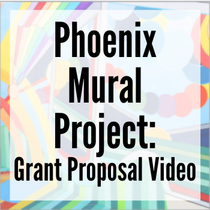
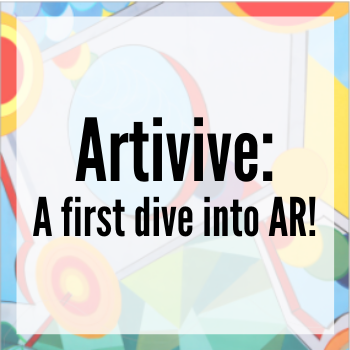

Link
This badge was issued to Skye Lucking on 22 August 2020. Expires on 22 August 2023 
Earners of the Unity Certified Associate: Game Developer badge possess a solid understanding of end-to-end game production using Unity, spanning key concepts in both technical art and programming. These earners have the core skills required to be confident iterating with prototypes, debugging, and solving programming challenges for successful game design and coding.

Link
The founder of the Phoenix Mural Project approached me about videographer work for a grant she was hoping to get for an Augmented Reality app focused on the murals of Phoenix. She was familiar with my YouTube channel, Courageous Creatives, and thought my interview skills with creatives would help.
When she mentioned the AR component - I said I wanted to work with that as well! Unfortunately, they did not receive the grant and the project did not move forward. However, to help her create the pitch video for the grant I recorded an interview with her and an artist with a green screen background, edited the video, and did a small proof-of-concept with me ‘popping’ in front of my own mural using an app called Artivive

Link
Augmented Reality is such a large topic, it was hard at first to get started. As an artist I was hoping to incorporate AR into my own work. I was thrilled to find Artivive, my first blush with producing AR content.
Artivive is an AR tool that allows artists to create new dimensions of art by linking classical with digital art. The digital layer opens doors to a whole new world of possibilities. Artists can take visitors on a journey through time, explain what lies underneath, enhance the art with animations, or show how the artworks were made.
Here are a few of my first experiments with art and AR. More to come!
- Man in Painting
- Animated Geometric Sunshine
- Animated Abstract
- Man in Shirt